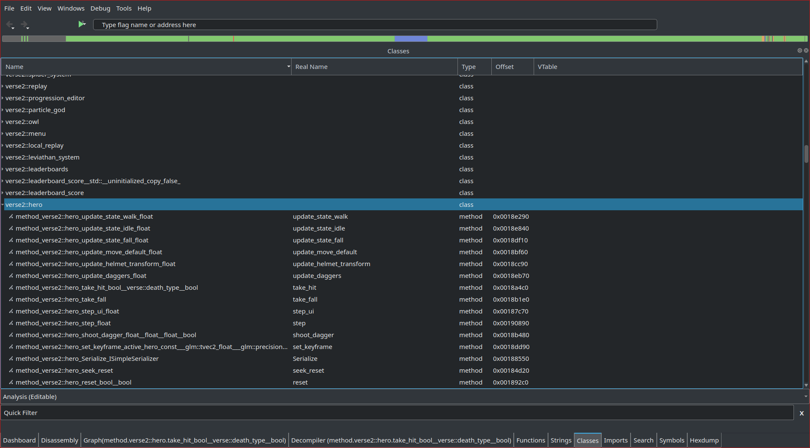
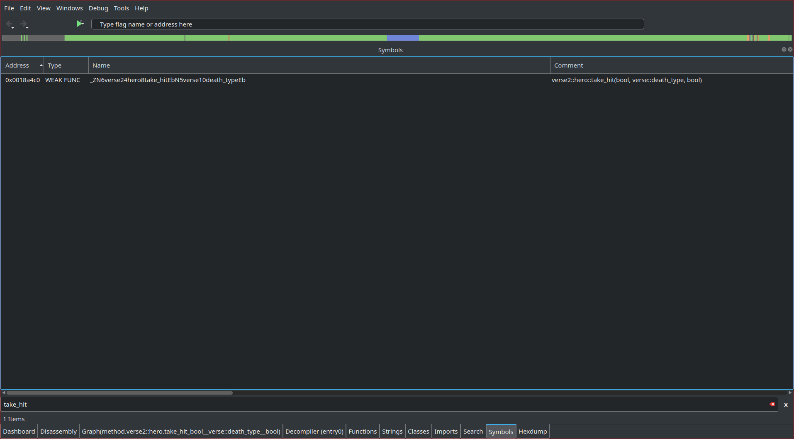
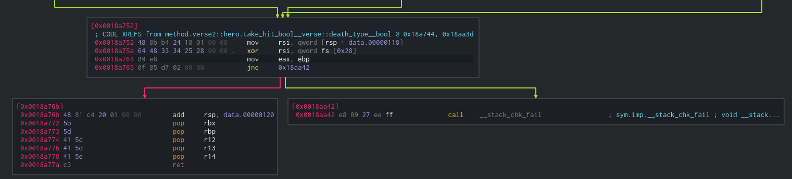
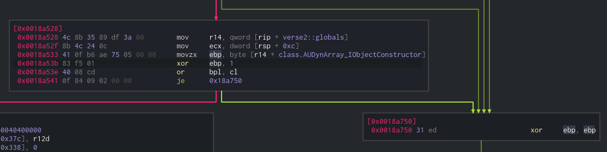
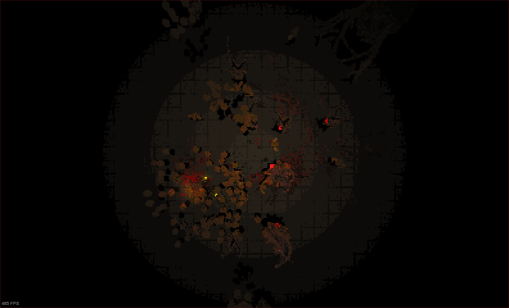

Reversing Devil Daggers
Table of Contents
1. About the game
Devil Daggers is a very fun and simple first-person shooter with a 1990s visual style. The game uses it’s own engine, which makes the reversing task very interesting. It also uses the verse 2.0 protocol.
I will be using the linux version of the steam game, currently v3.2.
For reversing, I will use cutter.
2. Getting general information about the game
If we open the devildaggers binary in cutter, and go through the function list,
we can immediately get some useful information. The game uses ImGui for the
menus, and we can see a lot of functions with enemy names inside the verse2
namespace. We also see some hx2 namespace which contains some utility functions.
Fortunately for us, cutter is able to display a lot of RTTI data. We can display
the “Classes” window from “Windows > Info… > Classes”. If we scroll down a
bit, we can start to see these verse2 classes:

We can asume that there is going to be some information related to the player
inside verse2::hero::*. Some functions that look interesting are hero::step(),
hero::take_hit() and hero::change_state_dead().
3. Making a simple godmode with detour hooking
3.1. Getting the function pointer
Let’s start by getting a pointer to the function we are interested in. Since
these symbols are exported, we can use dlsym() to get a pointer.
First, we need to get a handler to our program. Since these function are inside
the main program, can get our handle by passing NULL to dlopen().
dlopen(3)
The function dlopen() loads the dynamic shared object (shared library) file named by the null-terminated string filename and returns an opaque “handle” for the loaded object. […]
If filename is NULL, then the returned handle is for the main program. […]
The first parameter will be RTLD_LAZY | RTLD_NOLOAD because we want lazy binding
(resolve symbols as the code that references them is executed) and we don’t want
to load the shared object (since it’s already loaded).
To get the pointer to a symbol, we can use dlsym() with the handler we just got
and the symbol name.
If we want to avoid dying, verse2::hero::change_state_dead() looks like a good
place to start. I already had a look at this function, and it’s not ideal for
our purpose, so we will use verse2::hero::take_hit() instead (since a single hit
kills us anyway).
To get the real symbol name, we can either search for “take_hit” inside the
“Symbols” window (“Windows > Info… > Symbols”) or search using readelf and
grep:
readelf --wide --syms devildaggers | grep "hero.*take_hit"
We find that the symbol name is
“_ZN6verse24hero8take_hitEbN5verse10death_typeEb”. In there, we can also see the
type of the parameters.

The only thing we are missing is the return type. Since the returned value is
stored in rax (or eax, for 32-bits) for integer numbers, we have to look at the
function itself to determine what kind of value is being returned. We can see
that the value inside the ebp register is always being moved into eax before
returning.

If we scroll up a bit, we can see that the ebp register is either set to zero
just before returning, or it’s set to the result of some kind of or operation
before continuing with the execution.

We can safely asume that the function is not only returning a boolean, but also returning false when something goes wrong (hit was not valid).
The final code for finding verse2::hero::take_hit() looks like this:
#define SYM_HERO_TAKE_HIT "_ZN6verse24hero8take_hitEbN5verse10death_typeEb" bool globals_init(void) { void* handle_self = dlopen(NULL, RTLD_LAZY | RTLD_NOLOAD); if (!handle_self) { fprintf(stderr, "dlopen() returned NULL\n"); return false; } typedef void (*hero_take_hit_t)(Hero*, bool, int, bool); hero_take_hit_t hero_take_hit = dlsym(handle_self, SYM_HERO_TAKE_HIT); if (!hero_take_hit) { fprintf(stderr, "dlsym() returned NULL\n"); return false; } }
3.2. Hooking verse2::hero::take_hit()
We will be using the detour hooking method I explained in my detour hooking article, specifically we will be using my own detour hooking library.
Hooking using my library is very simple, we just need to declare the function type using a macro, declare and initialize the detour context and enable the hook.
#include "detour.h" /* Make sure these are accesible by the hook and the init function */ DETOUR_DECL_TYPE(bool, hero_take_hit, Hero*, bool, int, bool); detour_ctx_t ctx_hero_take_hit; static bool hook_hero_take_hit(Hero* thisptr, bool rsi, int death_type, bool rcx) { /* TODO: Implement our hook */ } /* Call when our shared object is injected */ void hooks_init(void) { detour_init(&ctx_hero_take_hit, hero_take_hit, hook_hero_take_hit); detour_add(&ctx_hero_take_hit); } /* Call when unloading our shared object */ void hooks_restore(void) { detour_del(&ctx_hero_take_hit); }
When the hook is enabled, all the calls to verse2::hero::take_hit() will instead
call our hook_hero_take_hit() function. From there, we can simply return false
without doing anything else to create a simple godmode. If we want to disable
the godmode, we can simply call the original function and return its value:
/* TODO: Toggle this setting from some kind of menu */ bool godmode = true; static bool hook_hero_take_hit(Hero* thisptr, bool rsi, int death_type, bool rcx) { /* Return false without calling the original */ if (godmode) return false; /* Call original hero::take_hit(), save the result and return it */ bool ret; DETOUR_ORIG_GET(&ctx_hero_take_hit, ret, hero_take_hit, thisptr, rsi, death_type, rcx); return ret; }
The only thing left is creating our constructor and destructor functions:
__attribute__((constructor)) /* Entry point when injected */ void load(void) { /* Find function address */ globals_init(); /* Hook it */ hooks_init(); loaded = true; } __attribute__((destructor)) /* Entry point when unloaded */ void unload() { if (!loaded) return; /* Unhook it */ hooks_restore(); }
When compiling, remember to link with the detour.c source and to use -fPIC to
avoid relocation errors.
5. Enabling the top-down camera outside of replays
There is a top-down camera mode available when watching a replay, so I thought it would be interesting to enable it while playing.
To get the offset of this boolean, I simply scanned the process using
GameConqueror to find that there were two values being set to zero when the
top-down camera was disabled, and to one when it was enabled (in a
replay). These two values correspond to the members of the verse2::hero and
verse2::globals structures. I decided to get the offset inside the globals by
subtracting the address I got in GameConqueror by the base address of
verse2::globals.
The final offset was 0x2BC, so I simply updated my verse_globals_t struct:
typedef struct verse_globals_t verse_globals_t; struct verse_globals_t { uint8_t pad0[0x2BC]; bool top_down_cam; /* 0x2BC */ uint8_t pad1[0x1CB]; bool particle_editor; /* 0x488 */ bool level_editor; /* 0x489 */ } __attribute__((packed));
I am not sure where this value is set from the game’s code, but if you have a suggestion feel free to contribute to this article.

6. Complete source code
The complete source code with some extra features can be found in 8dcc/devildaggers-re.